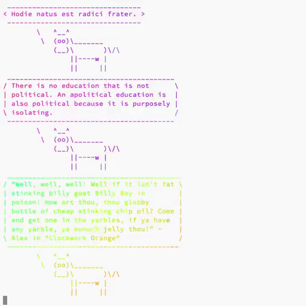
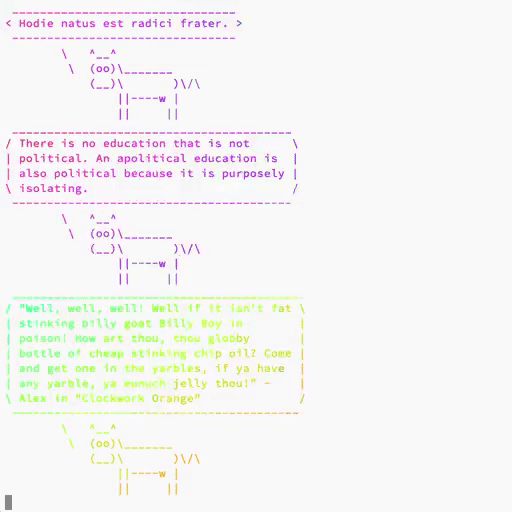

Emacs: reusing window for helpful buffers
Ironically, I find the helpful package quite helpful. It boosts Emacs help buffer with much more contextual information. If you haven’t tried it out yet, I advice you to do so.
However, by default, it doesn’t play nicely with windows.
Usually when I write some Elisp and I want to read the documentation of some function or variable, I hit C-h f or C-h v respectively and the help buffer is shown in the separate window. Which is convenient in my opinion, because I can see the code and the help.
Sometimes help contains links to other entries that I need to navigate. And when I hit <RET> window containing code shows another help buffer. Which might be good for some people, but I hate this behaviour, because usually I want to see the code that I am editing.
This is also annoying if you set the value of helpful-max-buffers to 1. Help window and the window with code are swapped on every navigation.
The good thing, it’s configurable (as almost everything in Emacs land).
(setq helpful-switch-buffer-function #'+helpful-switch-to-buffer)
(defun +helpful-switch-to-buffer (buffer-or-name)
"Switch to helpful BUFFER-OR-NAME.
The logic is simple, if we are currently in the helpful buffer,
reuse it's window, otherwise create new one."
(if (eq major-mode 'helpful-mode)
(switch-to-buffer buffer-or-name)
(pop-to-buffer buffer-or-name)))Revisiting Eru
As you might know, Eru is the supreme deity of Arda. The first things that Eru created where the Ainur. He then bade the Ainur to sing to him. Each Ainu had a particular theme given by Eru. Sure enough, Eru makes the ‘World and All That Is’.
So when I get a new clean system there is nothing yet. And so I call upon the wisdom and power of Eru.sh - the one who creates Ainur and the ‘World and All That Is’.
$ curl https://raw.githubusercontent.com/d12frosted/environment/master/bootstrap/eru.sh | bashI just have to wait patiently, while everything is being downloaded and installed, while all configuration cogs are being placed on the right spot.

High quality GIF from video
 

When it comes to converting video to GIF, one usually gets a huge file and a questionable quality. Most of the guides suggest to use FFmpeg to do the conversion, but usually, they don’t bother with the quality of the result. As it turns out, folks from FFmpeg made some huge steps in improving the GIF output.
Fish: notify me when you finish
Have you ever been in a situation when you called git fetch, stared at the screen for several seconds and then switched to the browser to read something ‘useful’ while git fetches updates? And in five minutes you’re like ‘Oh wait, I was doing something important, no?’. Rings the bell, doesn’t it?